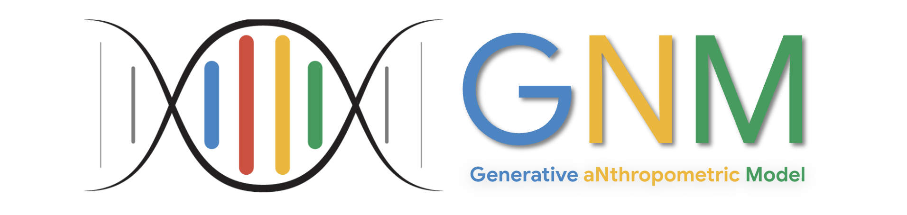

GNM Head: A Generative aNthropometric Model of the human head
arXiv preprint arXiv:2607.23687, 2026

Abstract
Parametric models of the human head are essential tools traditionally used in computer vision and graphics for animation, rendering, and reconstruction. More recently, they serve as crucial conditioning signals within generative large vision models, allowing for tight spatial control of generated imagery. However, existing publicly available models are typically limited in anatomical scope, modeling only outer geometry while ignoring intra-oral and ocular structures, and frequently suffer from reduced geometric quality stemming from low-fidelity input datasets. In this report we introduce a new parametric model dubbed Generative aNthropometric Model (GNM), named as a homophone of the human genome. GNM encompasses the head, face, neck, eyeballs, teeth, and tongue, and it is built on an extensive database of high-resolution 3D scans combined with high-quality anatomy specific artist-made samples. This report details the data provenance, the model architecture including the specialized sub-models for the ocular and intra-oral structures, and shows its SotA performance on fitting target 3D face scans. To foster community innovation, the complete GNM framework is made publicly available.
Downloads & resources
- Publication:
- Code:
Text Reference 
Stylianos Ploumpis, Jan Bednarik, Gaspard Zoss, Ruslan Guseinov, Luca Prasso, Prashanth Chandran, Oliver Boyne, Vasileios Choutas, Timo Bolkart, Daoye Wang, Menglei Chai, Di Qiu, Sebastian Winberg, Gilles Rainer, Lewis Bridgeman, Leonhard Helminger, Edo Collins, Delio Vicini, Jérémy Riviere, Yannick Boetzel, Alexander Koumis, Stylianos Moschoglou, Jay Busch, Cynthia Herrera, Jacob Still, Scott Ysebert, Peter Lincoln, Sergio Orts Escolano, Christoph Rhemann, Erroll Wood, Thabo Beeler, Stefanos Zafeiriou. GNM Head: A Generative aNthropometric Model of the human head. arXiv preprint arXiv:2607.23687, 2026.
BibTex Reference
@article{Ploumpis2026GNM,
title = {{GNM Head}: A Generative aNthropometric Model of the human head},
author = {Stylianos Ploumpis and Jan Bednarik and Gaspard Zoss and Ruslan Guseinov and Luca Prasso and Prashanth Chandran and Oliver Boyne and Vasileios Choutas and Timo Bolkart and Daoye Wang and Menglei Chai and Di Qiu and Sebastian Winberg and Gilles Rainer and Lewis Bridgeman and Leonhard Helminger and Edo Collins and Delio Vicini and J{\'e}r{\'e}my Riviere and Yannick Boetzel and Alexander Koumis and Stylianos Moschoglou and Jay Busch and Cynthia Herrera and Jacob Still and Scott Ysebert and Peter Lincoln and Sergio Orts Escolano and Christoph Rhemann and Erroll Wood and Thabo Beeler and Stefanos Zafeiriou},
journal = {arXiv preprint arXiv:2607.23687},
year = {2026},
}